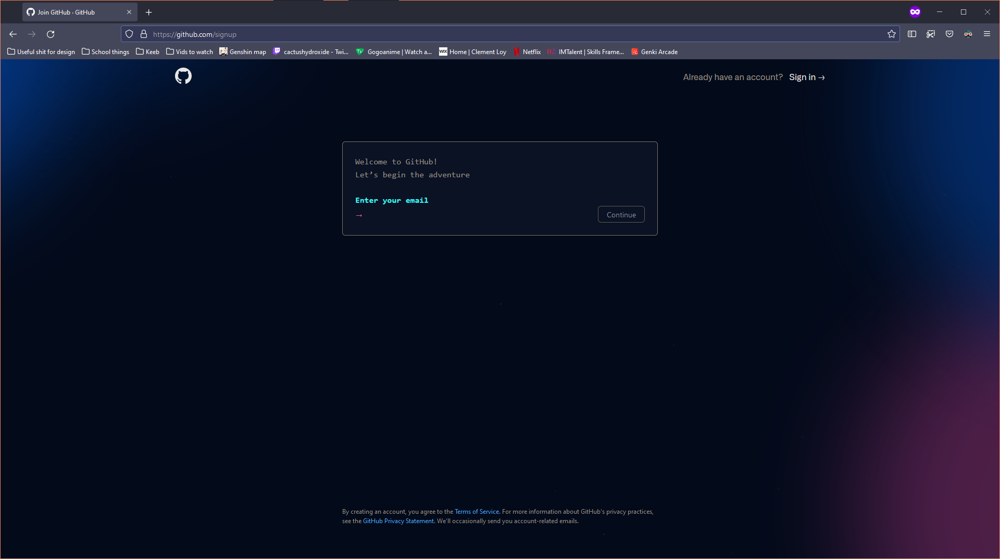
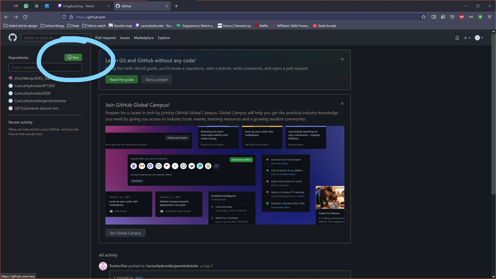
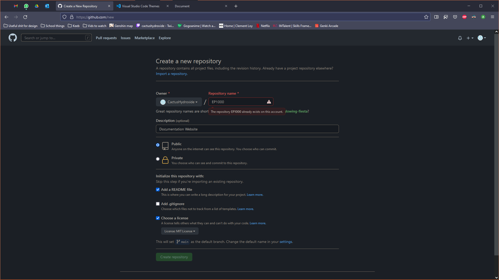
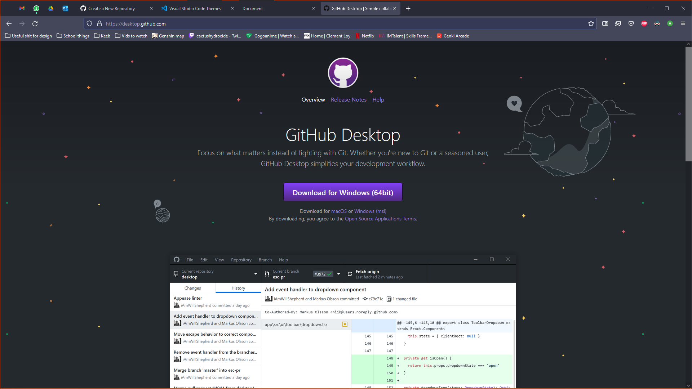
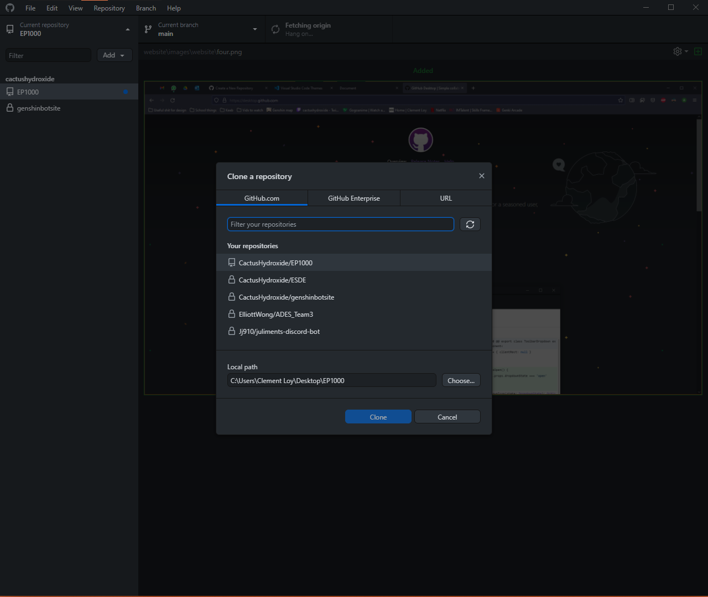
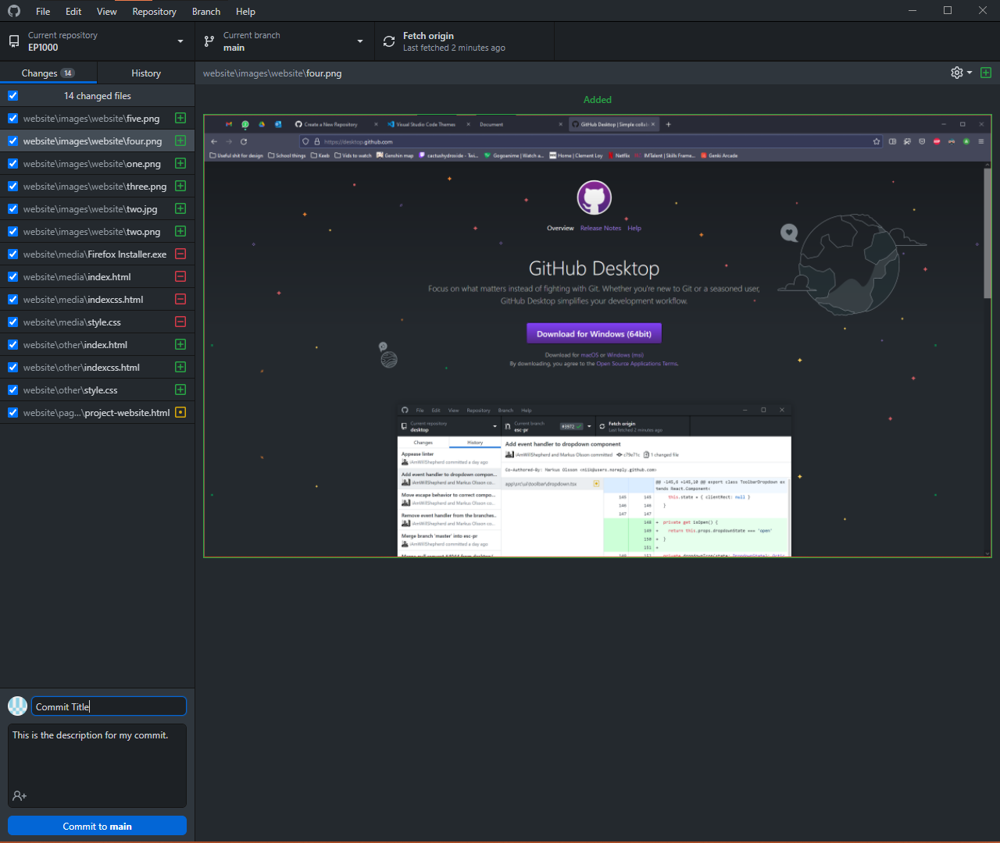
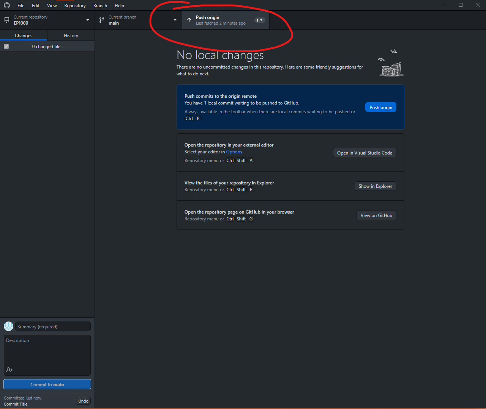
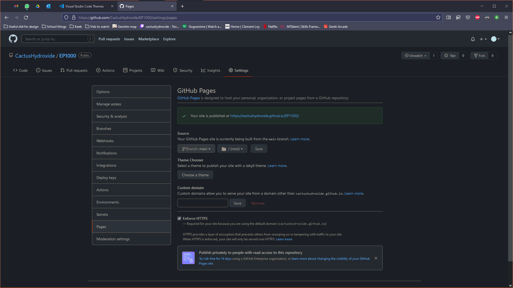

Website
Contents
- Why make a website?
- Why did you create a website from scratch?
- Basic HTML
- Basic Styling
- Advance Styling
- Github
Why make a website?
Developing this website serves multiple purpose. Firstly, it can help me develop my skills as a web designer. Allowing me to practice my HTML and CSS/SASS skills. Secondly, it allows me to easily view my projects at any time. If I would like to share my projects with others, I can navigate to this site to show others what I have done. Lastly, this website serves as a learning resource for others who would like to embark on their own journey into digital fabrication and rapid prototyping.
Why did you create a website from scratch?
Creating my website from scratch gives me a lot of advantages in comparison to using a website builder like wix. Firstly, creating my own website gives me the flexibility to create whatever I want. If I am able to learn something I can code it into the webpage. However, a website builder only lets me use their pre-existing templates and components that severely limit what I can do.
Creating a website is also a good opportunity to familiarise myself with how webpages are built. I have gained a better understanding on how the webpages I use on a daily basis work. This website allows me to appreciate all the hard work that has gone into the websites I view on a daily.
Basic HTML
This is my original website I made with basic HTML. It uses elements such as headers, list, paragraphs and much more.
This video can help you learn about HTML: Learn HTML in 12 minutes
This video can help you learn more about HTML: Learn more HTML in 12 minutes
This preview of the website is interactive, feel free to scroll and click it.
Basic Styling
There are 2 main ways of styling a HTML page. The first method is known as inline styling. Inline styling is written inside the HTML file. The second method is using a Cascading Style Sheet, also known as CSS. CSS is another type of file used to style HTML elements.
This video can help you learn about CSS: Learn CSS in 12 minutes
This preview of the website is interactive, feel free to scroll and click it.
I used CSS to style this webpage. I did so as CSS helps me better organise my website files. By separating the files, I am able to better see the code that I am writing. Using CSS also gives me more flexibility to change up the styles if I do not like it. I can link a different CSS file if I find the original one too bland any time I wish without changing anything in the HTML file.
Advance Styling
Bootstrap
There are 2 main types of addition styling I used for this webpage. First I used the bootstrap framework. Bootstrap is a popular framework used to built webpages. It helps me reduce the time it takes to develop and style this website with its many classes. By adding classes to my webpage, I am able to quickly create my navbar, tables and style my page with quick yet simple styling.
SCSS
The second addition styling feature I have in this webpage is Sassy CSS, also known as SCSS. SCSS is similar to CSS, however it is much more powerful. I am able to set variables to help me quickly colour my page. It also lets me nest different styles and classes to reduce the messy code that CSS can generate. SCSS can also interact with Bootstrap by overwriting some of its defaults, allowing me to add my own colour scheme into the webpage. You can read more about SCSS here.
Github
What is Github?
Github is a development platform that allows collaborative coding. You can also use it to store projects in the cloud. In github, you can create repository also known as repos. They are where you store your projects. Each repo comes with a default master branch. You can make a copy of the master branch to make edits to your project without disrupting the master. When you upload your changes, it is known as a commit. Each commit consist of a title, a quick description, and the changes to the project. Lastly, when you download the latest copy of a project, it is known as a pull request. You can read more about github here.
For this project, I will be using Github to document my work and to host this website. Next I explain how to host in github.
Step 1
It goes without saying but you would need to register a github account. https://github.com/signup to create an account. If you already have an account you can login and move on to the next step.
Step 2
Once you have logged in, create a new repository by clicking the 'new' button on the left. Afterwards fill in the details for your repo. Add a README file to write what your project is about and choose the MIT license.
 Step 3
Install Github desktop. Github desktop allows you to use github without memorising all the Git codes. You can install github desktop from here.
Step 4
After logging into github desktop, clone the repository to your device. Remember to take not of where you cloned your repo!
Step 5
The folder you cloned your repo to is now your workspace. You can start developing your website in the folder. Once you save your code, you have to commit your changes are push them the server. Add your summary and description at the bottom left of the application. Once you have committed your changes, push the changes to git!
 Step 6
Lastly, it is time to host your website. Go to your github repo > settings > pages. Set your details like mine and publish your website. Take note that you can only host 1 website on github at one time.
